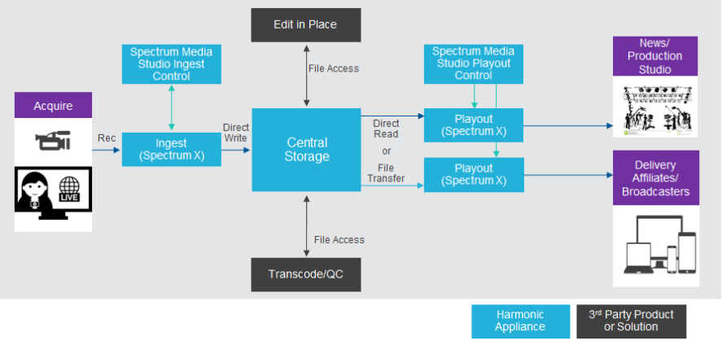
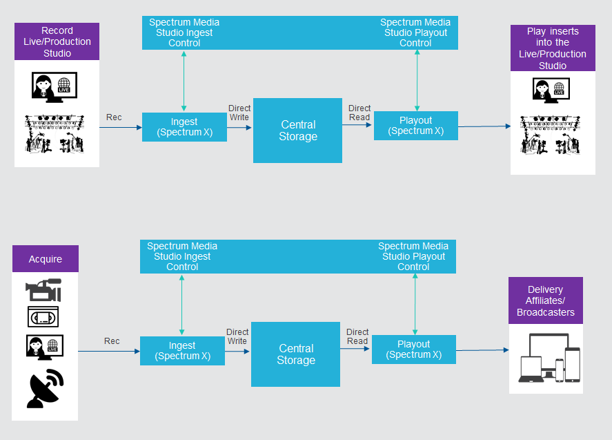
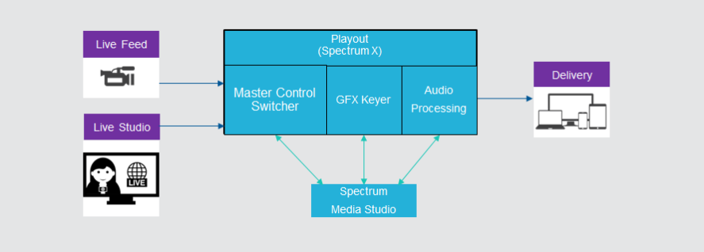

System Environment
Spectrum Media Studio is a complementary part of an overall playout or production system.
Production and Playout

Ingest and Playout

Manual Switching and GFX Insertion

Spectrum Media Studio is a complementary part of an overall playout or production system.